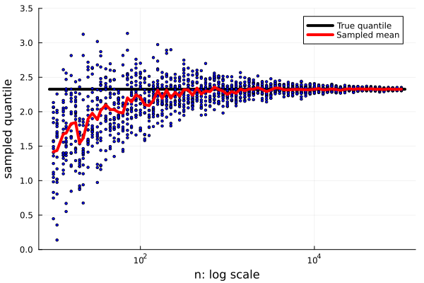
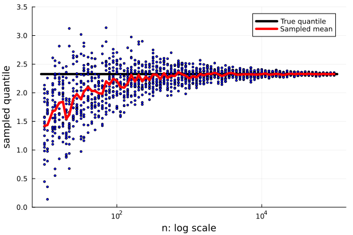

Monte Carlo sampling
The three previous lectures presented data analysis from an optimization viewpoint. We considered the dataset as fixed and then derived an optimization problem of minimizing the discrepancy between predictions and labels. This lecture returns to linear models. It presents a statistical viewpoint, which considers the data and the labels as random realizations (samples) of random variables. The family of methods using random sampling from the same random variable to obtain numerical results is called the Monte Carlo methods.
We will also present several topics on the curse of dimensionality, where behaviour in a large dimension is entirely different from the one in a small dimension. Since we humans cannot properly comprehend more than three dimensions, some of the results may be counter-intuitive.
Gamma function
One of the most commonly used functions in statistical analysis is the $\Gamma$-function defined by
\[\Gamma(z) = \int_0^\infty x^{z-1}e^{-z}dx.\]
It can be evaluated only approximately except for positive integers $k$, for which it holds
\[\Gamma(k) = (k-1)!.\]
It is implemented in the SpecialFunctions package.
using SpecialFunctions
using Plots
plot(0:0.1:10, gamma;
xlabel="x",
ylabel="gamma(x): log scale",
label="",
yscale=:log10,
)
Volume of m-dimensional ball
Machine learning datasets contain many features. Even simple datasets such as MNIST live in $28\times 28=784$ dimensions. However, we humans are unable to think in more than three dimensions. Working with more-dimensional spaces can bring many surprises. This section computes the volume of $m$-dimensional balls. Before we start, try to guess the volume of the unit balls in $\mathbb R^{10}$ and $\mathbb R^{100}$.
Use the formula to compute the volume of a $m$-dimensional ball. Plot the dependence of the volume on the dimension $m=1,\dots,100$.
Solution:
The formula can be easily transferred to a function.
volume_true(m, R) = π^(m/2) *R^2 / gamma(m/2 + 1)Then we create the plot. We use the log-scaling of the $y$-axis.
plot(1:100, m -> volume_true.(m, 1);
xlabel="dimension",
ylabel="unit ball volume: log scale",
label="",
yscale=:log10,
)"/home/runner/work/Julia-for-Optimization-and-Learning/Julia-for-Optimization-and-Learning/docs/build/lecture_12/dimension1.svg"This result may be surprising. While the volume of the $10$-dimensional ball is approximately $2.55$, the volume of the $100$-dimensional ball is almost $0$.
The following exercise uses the Monte Carlo sampling to estimate this volume. We will sample points in the hypercube $[-1,1]^m$ and then compute the unit ball volume by realizing that the volume of the ball divided by the volume of the box equals the fraction of sampled points inside the ball.
Write the function volume_monte_carlo, which estimates the volume of the $m$-dimensional ball based on $n$ randomly sampled points.
Hint: function rand(m,n) creates a $m\times n$ matrix, which can be understood as $n$ randomly sampled points in $[0,1]^m$. Transform them to $[-1,1]^m$.
Solution:
To transform the random variable from $[0,1]$ to $[-1,1]$, we need to multiply it by two and subtract one. Then we compute the norm of each sampled point. The estimated volume is computed as the fraction of the points whose norm is smaller than one multiplied by the hypercube volume. The latter equals to $2^m$.
using Random
using Statistics
function volume_monte_carlo(m::Int; n::Int=10000)
X = 2*rand(m, n).-1
X_norm_sq = sum(X.^2; dims=1)
return 2^m*mean(X_norm_sq .<= 1)
endThe next figure shows the estimated volume from $n\in \{10, 1000, 100000\}$ samples for the unit ball in dimension $m=1,\dots,15$.
ms = 1:15
ns = Int64.([1e1; 1e3; 1e5])
Random.seed!(666)
plt = plot(ms, m -> volume_true(m, 1);
xlabel="dimension",
ylabel="unit ball volume",
legend=:topleft,
label="True",
line=(4,:black),
)
for n in ns
plot!(plt, ms, m -> volume_monte_carlo.(m; n=n); label="n = $n")
end
display(plt)"/home/runner/work/Julia-for-Optimization-and-Learning/Julia-for-Optimization-and-Learning/docs/build/lecture_12/dimension2.svg"
It is not surprising that with increasing dimension, we need a much larger number of samples to obtain good estimates. This number grows exponentially with the dimension. This phenomenon explains why machine learning models with large feature spaces need lots of data. Moreover, the number of samples should increase with the complexity of the input and the network.
While we wrote our function for generating from the uniform distribution, we can also use the Distributions package.
using Distributions
rand(Uniform(-1, 1), 10, 5)We will discuss this topic more in the following section.
Sampling from distributions
This section shows how to generate from various distributions. We use the Distributions package to create the normal distribution with three sets of parameters.
using Distributions
d1 = Normal()
d2 = Normal(1, 1)
d3 = Normal(0, 0.01)
f1(x) = pdf(d1, x)
f2(x) = pdf(d2, x)
f3(x) = pdf(d3, x)We create the plot_histogram function, which plots the histogram of xs and its density f. We use the normalize keyword to obtain probabilities in the histogram.
function plot_histogram(xs, f; kwargs...)
plt = histogram(xs;
label="Sampled density",
xlabel = "x",
ylabel = "pdf(x)",
nbins = 85,
normalize = :pdf,
opacity = 0.5,
kwargs...
)
plot!(plt, range(minimum(xs), maximum(xs); length=100), f;
label="True density",
line=(4,:black),
)
return plt
endThe Distributions package allows to easily generate random samples from most distributions by rand(d, n). Do not confuse the call rand(d, n) with rand(m, n). The former employs the Distribution package and generates $n$ samples from distribution $d$, while the latter employs Base and generates $m\times n$ samples from $[0,1]$.
plot_histogram(rand(d1, 1000000), f1)"/home/runner/work/Julia-for-Optimization-and-Learning/Julia-for-Optimization-and-Learning/docs/build/lecture_12/density0.svg"
When the sampled point number is high enough, the sampled histogram is a good approximation of its density function.
We may work with a distribution $d$ for which we know the density $f$, but there is no sampling function. Then we can use the rejection sampling technique, which assumes the knowledge of:
- the interval $[x_{\rm min}, x_{\rm max}]$ containing the support of $f$.
- the upper bound $f_{\rm max}$ for the density $f$.
The rejection sampling technique first randomly samples a trial point $x\in [x_{\rm min}, x_{\rm max}]$ and a scalar $p\in [0,f_{\rm max}]$. It accepts $x$ if $p \le f(x)$ and rejects it otherwise. This technique ensures that a point is accepted with a probability proportional to its density function value.
Implement the rejection_sampling function. It should generate $n$ trial points and return all accepted points.
Solution:
While it is possible to generate the random points one by one, we prefer to generate them all at once and discard the rejected samples. The function follows precisely the steps summarized before this exercise.
function rejection_sampling(f, f_max, x_min, x_max; n=1000000)
xs = x_min .+ (x_max - x_min)*rand(n)
ps = f_max*rand(n)
return xs[f.(xs) .>= ps]
endWe will now use the rejection sampling technique to generate the random samples from the three distributions from above. Since the density $f$ of the normal distribution achieves its maximum at the mean, we specify f_max = f(d.μ).
xlims = (-10, 10)
for (f, d) in zip((f1, f2, f3), (d1, d2, d3))
Random.seed!(666)
xs = rejection_sampling(f, f(d.μ), xlims...)
pl = plot_histogram(xs, f)
display(pl)
end


While the rejection sampling provides a good approximation for the first two distributions, it performs subpar for the last distribution. The reason is that the rejection sampling is sensitive to the choice of the interval $[x_{\rm min}, x_{\rm max}]$. Because we chose the interval $[-10,10]$ and $f_3$ has negligible values outside of the interval $[-0.1,0.1]$, most trial points got rejected. It is not difficult to verify that from the $1000000$ trial points, only approximately $1200$ got accepted. The small number of accepted points makes for the poor approximation. If we generated from a narrower interval, the results would be much better.
This exercise computes the expected value
\[\mathbb E_3 \cos(100X) = \int_{-\infty}^\infty \cos(100 x) f_3(x) dx,\]
where we consider the expectation $\mathbb E$ with respect to $d_3\sim N(0, 0.01)$ with density $f_3$. The first possibility to compute the expectation is to discretize the integral.
h(x) = cos(100*x)
Δx = 0.001
xs = range(xlims...; step=Δx)
e0 = Δx * sum(f3.(xs) .* h.(xs))The second possibility is to approximate the integral by
\[\mathbb E_3 \cos(100X) \approx \frac 1n\sum_{i=1}^n \cos(x_i),\]
where $x_i$ are sampled from $d_3$. We do this in expectation1, and expectation2, where the formed generates from the Distributions package while the latter uses our rejection sampling. We use the method of the mean function, which takes a function as its first argument.
expectation1(h, d; n = 1000000) = mean(h, rand(d, n))
function expectation2(h, f, f_max, xlims; n=1000000)
return mean(h, rejection_sampling(f, f_max, xlims...; n))
endIf it is difficult to sample from $d_3$, we can use a trick to sample from some other distribution. This is based on the following formula:
\[\mathbb E_3 h(x) = \int_{-\infty}^\infty h(x) f_3(x) dx = \int_{-\infty}^\infty h(x) \frac{f_3(x)}{f_1(x)}f_1(x) dx = \mathbb E_1 \frac{h(x)f_3(x)}{f_1(x)}.\]
This gives rise to another implementation of the same thing.
function expectation3(h, f, d_gen; n=1000000)
g(x) = h(x)*f(x)/pdf(d_gen, x)
return mean(g, rand(d_gen, n))
endWe run these three approaches for $20$ repetitions.
n = 100000
n_rep = 20
Random.seed!(666)
e1 = [expectation1(h, d3; n=n) for _ in 1:n_rep]
e2 = [expectation2(h, f3, f3(d3.μ), xlims; n=n) for _ in 1:n_rep]
e3 = [expectation3(h, f3, d1; n=n) for _ in 1:n_rep]Finally, we plot the results. Sampling from the package gives the best results because it generates the full amount of points, while the rejection sampling rejects many points.
scatter([1], [e0]; label="Integral discretization", legend=:topleft)
scatter!(2*ones(n_rep), e1; label="Generating from Distributions.jl")
scatter!(3*ones(n_rep), e2; label="Generating from rejection sampling")
scatter!(4*ones(n_rep), e3; label="Generating from other distribution")
This exercise considered the computation of a one-dimensional integral. It is important to realize that even for such a simple case, it is necessary to sample a sufficiently large number of points. Even when we sampled $100000$ points, there is still some variance in the results, as the last three columns show.
How many samples do we need?
Previous sections showed that we need many samples to obtain a good approximation of a desired quantity. The natural question is, how exactly many samples do we need? Even though many results estimate such errors, unfortunately, the answer depends on the application. This section will present two examples. The first one shows the distance of sampled points in a more-dimensional space, while the second one computes quantiles.
Sample $n=1000$ points in the unit cube in the $m=9$-dimensional space. What is the minimum distance of these points? Before implementing the exercise, try to guess the answer.
Solution:
We first sample the points.
n = 1000
m = 9
Random.seed!(666)
xs = rand(m, n)Then we save the pairwise of points in dist1. Since this variable contains zeros on the diagonal, and since lower and upper diagonal are the same, we select only the upper part of the matrix and save it into dist2.
using LinearAlgebra
dist1 = [norm(x-y) for x in eachcol(xs), y in eachcol(xs)]
dist2 = [dist1[i,j] for i in 1:n for j in i+1:n]This approach has the disadvantage that it allocates an $n\times n$ matrix.
The minimum of these distances is roughly $0.2$, while the maximum is $2.2$. The minimum is surprisingly high and shows that sampling even $1000$ points in $\mathbb R^9$ forms a very sparse structure. The maximum distance is far away from the distance of two corners of the hypercube, which equals $\sqrt{m}=3$.
extrema(dist2)(0.20051862230649456, 2.215876305466382)Quantiles form an important concept in statistics. Its definition is slightly complicated; we will consider only absolutely continuous random variables: one-dimensional variables $X$ with continuous density $f$. Then the quantile at a level $\alpha\in[0,1]$ is the unique point $x$ such that
\[\mathbb P(X\le x) = \int_{-\infty}^x f(x)dx = \alpha. \]
The quantile at level $\alpha=0.5$ is the mean. Quantiles play an important role in estimates, where they form upper and lower bounds for confidence intervals. They are also used in hypothesis testing.
This part will investigate how quantiles on a finite sample differ from the true quantile. We will consider two ways of computing the quantile. Both of them sample $n$ points from some distribution $d$. The first one follows the statistical definition and selects the index of the $n\alpha$ smallest observation by the partialsort function. The second one uses the function quantile, which performs some interpolation.
quantile_sampled1(d, n::Int, α) = partialsort(rand(d, n), floor(Int, α*n))
quantile_sampled2(d, n::Int, α) = quantile(rand(d, n), α)We defined the vectorized version. This is not efficient because for every $n$, the samples will be randomly generated again.
quantile_sampled1(d, ns::AbstractVector, α) = quantile_sampled1.(d, ns, α)
quantile_sampled2(d, ns::AbstractVector, α) = quantile_sampled2.(d, ns, α)We generate the quantile for $\alpha = 0.99$ and repeat it 20 times.
α = 0.99
n_rep = 20
ns = round.(Int, 10 .^ (1:0.05:5))
Random.seed!(666)
qs1 = hcat([quantile_sampled1(d1, ns, α) for _ in 1:n_rep]...)
Random.seed!(666)
qs2 = hcat([quantile_sampled2(d1, ns, α) for _ in 1:n_rep]...)We initialize the plot with the line for the true quantile. Since this will be part of both plots, we create just one and use deepcopy to create the other one.
plt1 = plot([0.9*minimum(ns); 1.1*maximum(ns)], quantile(d1, α)*ones(2);
xlabel="n: log scale",
ylabel="sampled quantile",
xscale=:log10,
label="True quantile",
line=(4,:black),
ylims=(0,3.5),
)
plt2 = deepcopy(plt1)Now we add the sampled quantiles and the mean over all repetitions. Since we work with two plots, we specify into which plot we want to add the new data. It would be better to create a function for plotting and call it for qs1 and qs2, but we wanted to show how to work two plots simultaneously.
for i in 1:size(qs1,1)
scatter!(plt1, ns[i]*ones(size(qs1,2)), qs1[i,:];
label="",
color=:blue,
markersize = 2,
)
scatter!(plt2, ns[i]*ones(size(qs2,2)), qs2[i,:];
label="",
color=:blue,
markersize = 2,
)
end
plot!(plt1, ns, mean(qs1; dims=2);
label="Sampled mean",
line=(4,:red),
)
plot!(plt2, ns, mean(qs2; dims=2);
label="Sampled mean",
line=(4,:red),
)
display(plt1)
display(plt2)"/home/runner/work/Julia-for-Optimization-and-Learning/Julia-for-Optimization-and-Learning/docs/build/lecture_12/quantile2.svg" 

Both sampled estimates give a lower estimate than the true quantile. In statistical methodology, these estimates are biased. We observe that the interpolated estimate is closer to the true value and that computing the quantile even on $10000$ points gives an uncertainty interval of approximately $0.25$.